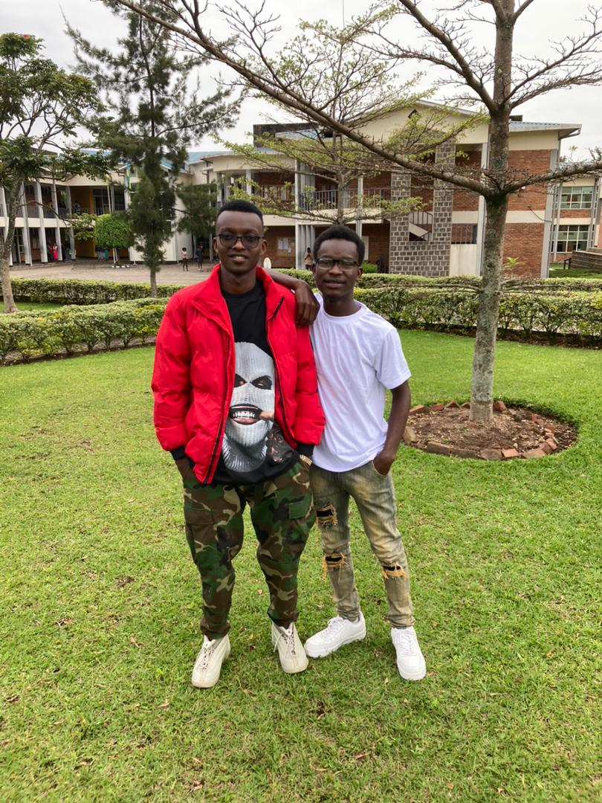

About Me
My name is Oreste and I am a web developer. I have been working in this field for over 5 years and I love what I do. I specialize in creating responsive websites that work well on all devices.
When I'm not working, I enjoy hiking, reading, and spending time with my family.
My Skills
- HTML
- CSS
- JavaScript
- PHP
My Projects
Contact Me
ndagiwenayo Oreste
KN 42 st
kigali, RWANDA
Email: ndagiwenayoo@gmail.com
Phone: 0788887599
My Favorite Quote
Life is 10% what happens to us and 90% how we react to it.
My Favorite Image
Preformatted Text
title: The Lonely Traveler [Enter stage left: a solitary figure, dressed in worn clothing, carrying a heavy backpack.] Narrator: The lonely traveler walked the path less traveled, seeking adventure and solitude in equal measure. [Traveler stops, looks around, takes a deep breath.] Narrator: The quiet of the forest enveloped him, the rustling leaves and chirping birds providing a natural symphony. [Traveler continues walking, the backpack seeming to grow heavier with each step.] Narrator: His journey was long and arduous, but the traveler pressed on, his determination driving him forward. [Traveler stops at a clearing, sets down his backpack, and sits on a log.] Narrator: As he rested, the traveler gazed up at the sky, marveling at the beauty of the stars shining above. [Traveler pulls out a journal and begins writing.] Narrator: The traveler recorded his thoughts and feelings, capturing the essence of his journey in words. [Traveler stands up, picks up his backpack, and continues walking.] Narrator: The road ahead was uncertain, but the traveler felt a sense of peace and purpose, knowing that every step brought him closer to his destination. [Traveler exits stage right, disappearing into the wilderness.My Website Welcome to My Website